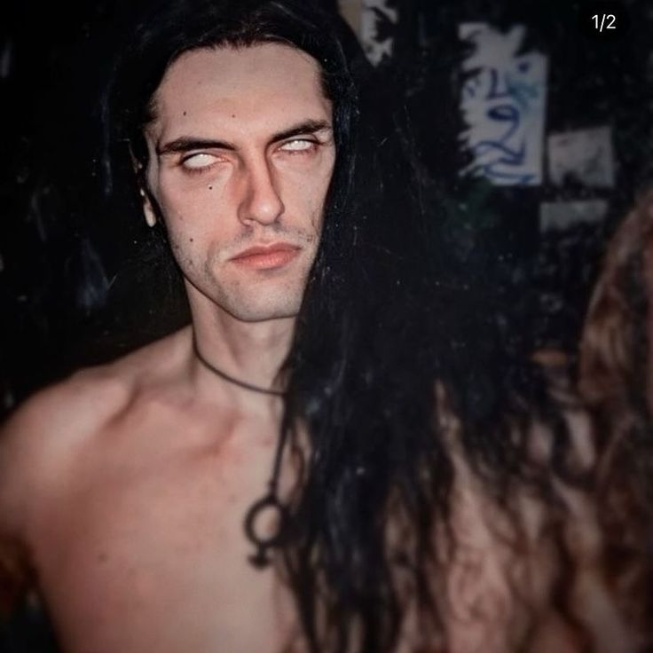
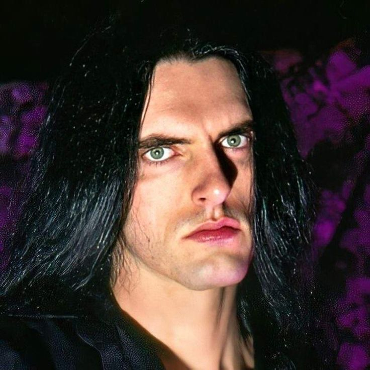
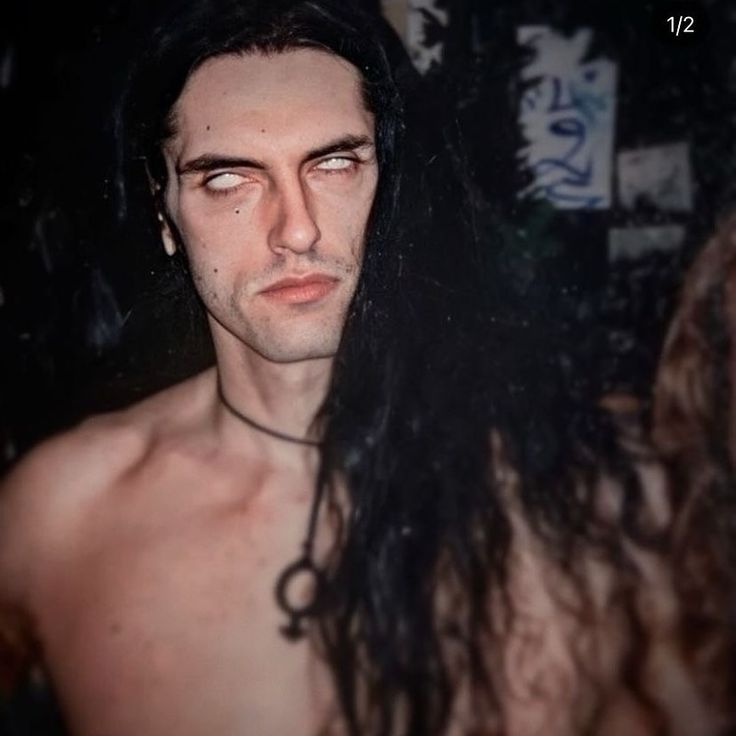
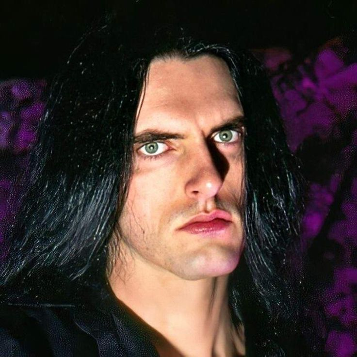
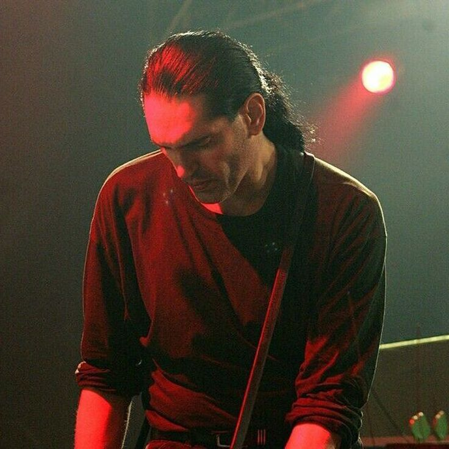
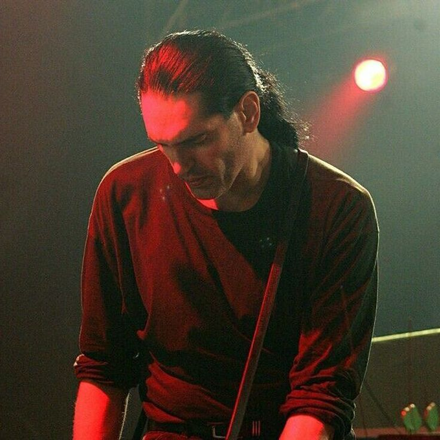

Carreira com Type O Negative
Formada em 1989 das cinzas do Carnivore, o Type O Negative rapidamente se estabeleceu como uma força
única no metal. Com Peter Steele no baixo e vocais, Kenny Hickey na guitarra, Josh Silver nos
teclados e Sal Abruscato (mais tarde substituído por Johnny Kelly) na bateria, a banda de Brooklyn
criou um som que era ao mesmo tempo pesado, melancólico, atmosférico e inegavelmente cativante.
O álbum de estreia, "Slow, Deep and Hard" (1991), já mostrava a direção musical da banda, mas foi com
"Bloody Kisses" (1993) que o Type O Negative alcançou sucesso internacional, impulsionado por hinos
góticos como "Black No. 1 (Little Miss Scare-All)" e "Christian Woman". Este álbum se tornou o
primeiro da gravadora Roadrunner Records a atingir platina.
A banda tornou-se uma das bandas mais icônicas e influentes do metal
gótico, fundindo elementos de doom metal, rock gótico e até mesmo pop em sua sonoridade única.
Álbuns como "Bloody Kisses" e "October Rust" foram sucessos comerciais e de crítica, solidificando
Peter Steele como uma voz inconfundível e um compositor talentoso.
Seguiram-se álbuns aclamados como "October Rust" (1996), com sua atmosfera outonal e romântica,
"World Coming Down" (1999), um mergulho profundo na escuridão e no vício, "Life Is Killing Me"
(2003), e o último álbum de estúdio, "Dead Again" (2007). A música do Type O Negative, guiada pela
visão artística de Steele, permanece influente e reverenciada por fãs de metal e música gótica em
todo o mundo.
Após a morte de Peter Steele em 2010, os membros restantes do Type O Negative decidiram encerrar a
banda, reconhecendo que ele era insubstituível. No entanto, seu legado continua vivo através de suas
músicas, influenciando novas gerações de músicos e fãs. Steele é lembrado não apenas por sua música,
mas também por sua personalidade carismática e seu impacto duradouro na cena do metal.
A jornada musical de Peter Steele começou em 1979 com a banda de heavy metal Fallout. Após
sua dissolução, ele formou a controversa banda de thrash metal Carnivore em 1982, conhecida
por
suas letras provocativas sobre temas como guerra, religião e questões sociais. O Carnivore
lançou
dois álbuns antes de se separar, abrindo caminho para a criação do Type O Negative.
Peter Steele também era conhecido por seu amor por gatos. Ele frequentemente mencionava seus
gatos de estimação em entrevistas e demonstrava grande carinho por eles, chegando a
incluí-los em fotos
promocionais e materiais da banda. Para Steele, os gatos eram companheiros importantes e uma
fonte
de conforto em sua vida pessoal.
Uma das histórias mais curiosas sobre Peter Steele é sua famosa sessão de fotos para a revista
Playgirl em 1995. Steele, conhecido por seu humor autodepreciativo, posou nu para a revista,
o que gerou uma onda de atenção e especulação. Ele fez isso como uma forma de brincar com a
imagem que as pessoas tinham dele, desafiando as expectativas e mostrando seu lado mais leve e
irreverente.
Sobre o ensaio para a revista, Peter Steele revelou posteriormente que acreditava
que a maioria dos leitores da revista era composta por mulheres, mas descobriu depois que grande
parte do público era masculino. Ele brincava sobre o assunto em entrevistas, dizendo que recebeu
mais atenção de homens do que esperava, e que a experiência foi, no mínimo, curiosa. Apesar do
constrangimento inicial, Steele encarou a situação com autodepreciação e bom humor, tornando o
episódio uma das curiosidades mais lembradas de sua carreira.


 



 
